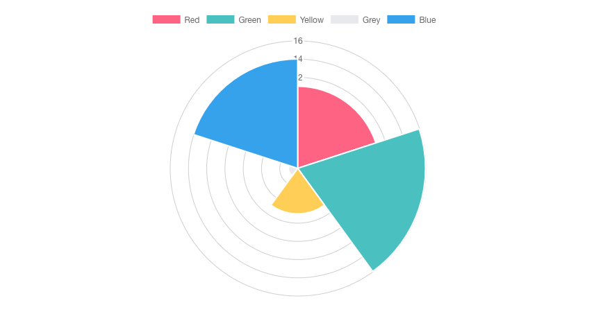

소스 코드 보러가기
사이트에서 원하는 내용만 수집해오는 크롤러.
더 나아가 mecab-ko와 같은 형태소 분석기를 사용하면 키워드 별로 분류하고 빈도수도 알아낼 수 있다.
무한 스크롤 페이지에 적합하게 만들었고, 페이지네이션 사이트를 크롤링 하려면 직접 구현해야한다.
원티드의 프론트 개발 지원 자격을 크롤링 하여 키워드 별로 분류 후 나타낸 그래프
설치
|
|
형태소 분석기(한국어 버전)
개발하기
첫 번째로 태스크 러너를 실행해야한다. (gulp)
- eslint
- babel
|
|
두 가지 태스크를 먼저 수행한 후에 ES5로 트랜스파일 된 파일을 실행하면 된다.
혹시 다른 태스크를 실행하고 싶다면 gulpfile.js 를 수정한 후 package.json의 npm script를 수정하거나
npm v5.2.0 이상이라면 npx를 사용하자.1npx gulp TASK_NAME
두 번째로 크롤러 코드를 작성해야한다.
- 크롤러 코드 (/src/crawlContents.js)
- 크롤링한 내용을 형태소로 분석하기 위한 코드(/src/morphemeParser.js)
- 형태소로 분류한 단어들의 빈도수를 구하기 위한 코드(/src/countKeyword.js)
이 프로젝트는 완성본이 아니기 때문에 위 코드들을 구현해줘야한다.
실제로 구현된 내용은 페이지의 무한 스크롤 컨텐츠를 모두 로딩하는 것 밖에 없다.
위 코드들을 어떻게 작성해야할지 감이 잡히지 않는 사람들은 demo 디렉토리에 있는 예제를 보자.
해당 예제는 구인구직 사이트인 원티드에서 프론트 엔드 개발자의 지원 자격을 키워드 별로 뽑아내는 예제이다.
세 번째로 크롤러를 구동하자.
|
|
만약 다른 크롤러를 구동하고 싶다면 package.json의 npm script를 수정하거나
npm v5.2.0 이상이라면 npx를 사용하자.1npx phantomjs ANOTHER_CRAWLER.js
데모 크롤러 구동해보기
|
|
무한 스크롤 콘텐츠를 모두 로딩하고 100 여 개가 넘는 채용 공고를 크롤링 하기 때문에 시간이 다소 걸린다.